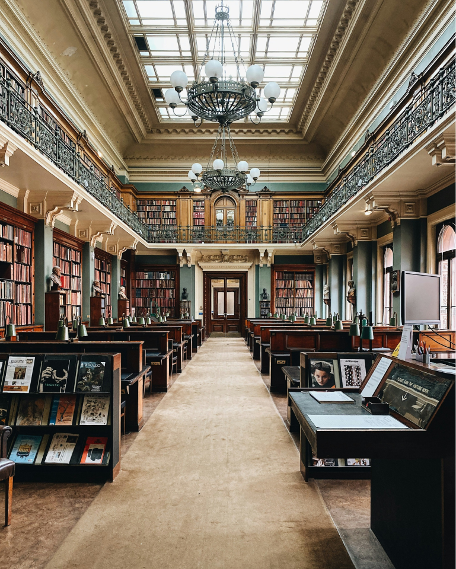

Nestled in the heart of Manhattan, the New York Public Library stands as a beacon of knowledge and culture. With its majestic lions guarding the entrance, this iconic institution welcomes millions of visitors each year. Inside, the vast halls whisper the stories of ages past, as visitors tread softly among towering shelves laden with books. The Rose Main Reading Room, with its grand ceilings and serene ambiance, invites scholars and dreamers alike to delve into the world of words. Beyond its role as a repository of books, the library serves as a community hub, hosting events, workshops, and exhibitions that breathe life into its historic walls.
